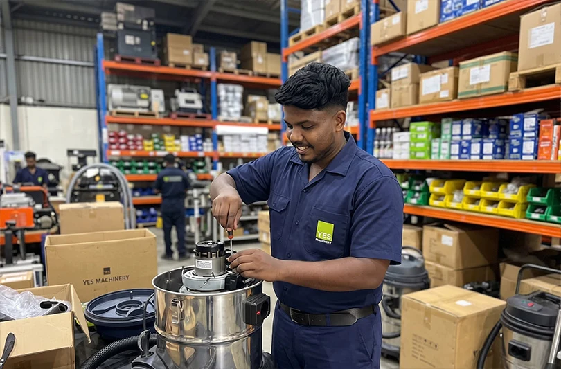

Unexpected machine breakdowns are such a hassle, hindering operations and causing costly downtimes. Industrial equipment repair plays a crucial role in keeping machines in their best condition, ensuring efficient and consistent performance.
At YM Plus, we offer expert industrial machine repair service across the UAE, trouble shooting and tackling issues and restoring the efficiency of equipment.
Our team conducts a detailed inspection of the machines to identify issues such as loose connections, misalignments, and control system errors and perform rapid and accurate repair.
We respond quickly to emergency breakdowns and efficiently troubleshoot the issue, without disrupting the daily operations.
We carry out all the necessary repairs and replacement of worn-out parts to ensure the efficient functioning of the machine.
We provide on-site repairs, identifying and resolving the issues, thereby maintaining the equipment’s performance.
Our skilled technicians specialize in the repairing and servicing of the following machines:
Cutting machines (shearing, plasma, and laser)
Bending machines (press brake)
Rolling machines
Drilling and punching machines
Welding machines
CNC fabrication machines
We have a team of expert industrial technicians experienced in the handling and repairing advanced machineries.
We provide high quality repairs at competitive pricing.
We respond quickly to service requests and ensure that the issues are addressed right away.
Our prompt and efficient response to issues and effective trouble shoot reduces machine downtime and aids in unhindered operation.
No matter what the machine hassle is, YM Plus will ensure that your machines are back to their optimal functioning by providing prompt breakdown maintenance services. Finding a machine breakdown?
Call us now to avail the best industrial machine repair services across the UAE.
Yes, the expert technicians at YM Plus promptly responds to emergency breakdown and performs detailed inspection, identifies the cause, carries out the repair work and quickly restores your machine, without hindering the workflow.
Our technicians can handle a wide range of machinery crises such as mechanical, hydraulic, pneumatic, vibration and other performance related issues and opt for the best repair method.
Yes, we provide the proper and efficient replacement of worn-out components with high quality machinery parts, depending on the exact requirements of the machine.
Yes, at YM Plus, we offer prompt and efficient on-site machinery repair services, actively examining and resolving the issue directly at your facility, minimizing downtime and unnecessary machine shifting.